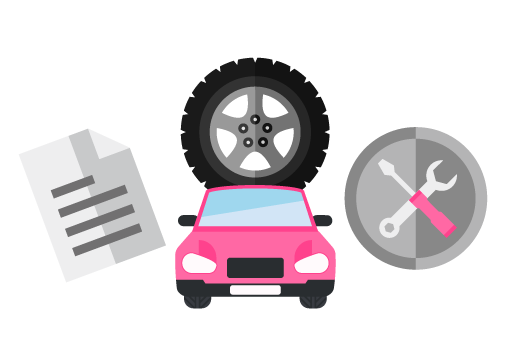

タイヤ保証
タイヤ保証とは、お客様に安心を提供でき、新たな収益を上げることができるサービスです。 保証に加入いただいた方のタイヤがパンクやバーストなど損傷した際に、最大4本を上限に新品タイヤと交換できます。 販売店様はタイヤ保証を取り扱うことでお客様に安心を提供でき、有償で保証を販売することで新たな収益を得ることができます。 また、保証を利用する際に来店が必要であるため、リピート率の向上・顧客満足度の向上を図ることができます。

導入メリット
売上高の向上
保証販売により、単価価のアップが見込めると共にタイヤ販売促進のきっかけにもなり
ます。タイヤ交換時の工具はお客様負担ですので「保証」「タイヤ」「工具」の3つの収益
アップが見込めます。

回帰率の向上
今まで流出していたかもしれないお客様が、
保証を経由ご利用いただくことで再度御社部品へ戻って来るようになります。
また、満足度が高い提案で別商品販売が行えるようにもなります。
保険の販売拡大
「通常の保険では対応できないタイヤの単体損害を補償できますよ」という他保険メニューからの切り口で保険内容をアピールし、保証販売に繋げることもできます。
安心・安全の提供
義務化が進んでいる自動ブレーキも足回りがしっかり整備されていないとパフォーマン
スが下がってしまいます。今までなかった「1本のパンクで4本交換」することでお客様に
安心・安全を提供できます。
サービス実績
幅広いチャネルで導入
全国の新車販売店、中古車販売店、カー用品店、ガソリ
ンスタンド等タイヤを扱う様々な販売店舗様に導入されて
おり、着実にその効果を実感いただいています。
年間1万件以上の保証受付実績
タイヤ保証を通じて、年間で1万件以上の数取受付を対応。
電話のみならず、使い慣れたLINEやユーザーフォームなど
を活用することで多くのお客様に安心を提供しています。
タイヤパンク調査センターを設置
中長期的な運用に向けて、不正を排除すべくタイヤ損傷
に特化した調査センターを設立し、不正請求を防止して おります。
タイヤ販売本数の増加
「タイヤ保証があるなら4本交換」のニーズで、今まで
2本交換で済ませていたお客様も4本ご購入いただくことが
でき、多くの販売店舗様で販売本数が増加しております。